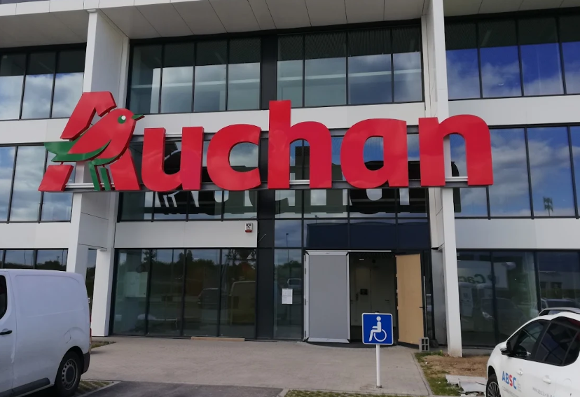
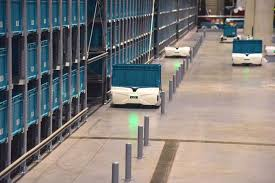
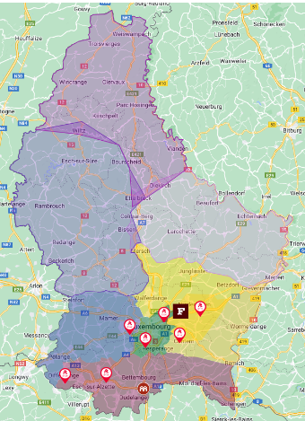
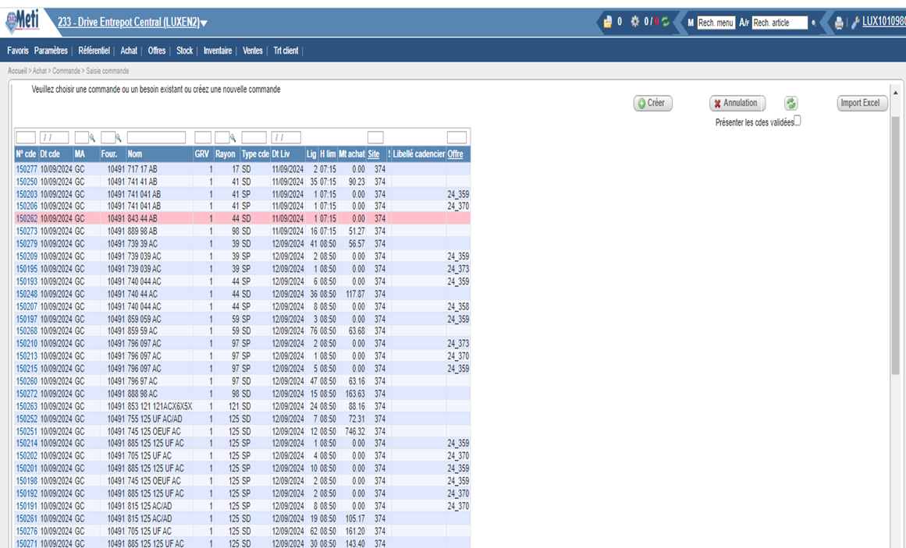

Appro & logistique Exotec
Stage de 4 mois au sein du service e-commerce de l'entrepôt Auchan Dudelange : approvisionnement de 6 drives, ouverture d'un nouveau magasin et optimisation des flux via les robots Exotec Skypod.
🌍 Le stage en bref


Ouverture du MyAuchan Esch-sur-Alzette
Assurer la disponibilité des produits dès le premier jour d'un nouveau magasin, en équilibrant les besoins du lancement avec ceux des 6 drives existants.
🎯 Le défi
Garantir zéro rupture de stock en rayons sucrés, salés et alcools pour le lancement du 11 septembre, tout en maintenant l'approvisionnement des drives existants. Un contexte de forte concurrence (Leclerc) et d'effectifs réduits en août rendait la mission critique.

⚙️ Mon travail
Analyse des historiques de vente, priorisation des produits critiques, passation de commandes via les logiciels Méti et maGistor, gestion des cadenciers et des DLC. D'abord encadré, j'ai rapidement travaillé en autonomie.

✅ Résultat
Ouverture réussie le 11 septembre 2024 - aucune rupture de stock majeure dans les rayons alimentaires et alcools dès le premier jour. Ma prise en charge des commandes à longue DLC a libéré l'équipe pour les produits à rotation rapide.
Stockage Mezzanine × Exotec
Maximiser la capacité des box Exotec pour 1 233 références de produits sucrés et salés, réduire la fréquence de commandes et libérer du temps pour les équipes.
🤖 La démarche
En binôme, analyse terrain de chaque référence dans la mezzanine : scan des codes-barres (système MZ.31.02.07.02), mesure physique des PCB (cartons fournisseurs), test de placement dans les box Exotec, et recommandations d'ajustement dans un fichier Excel.
1 233 références analysées pour évaluer si un ou deux cartons pouvaient tenir par box, en fonction des dimensions.

Le stage en images
Ce que ce stage m'a apporté
Rapport de stage
Rapport de stage - Auchan Retail Luxembourg
Le rapport complet de ma mission : présentation de l'entreprise, détail des missions réalisées et bilan personnel.
Ouvrir le PDF